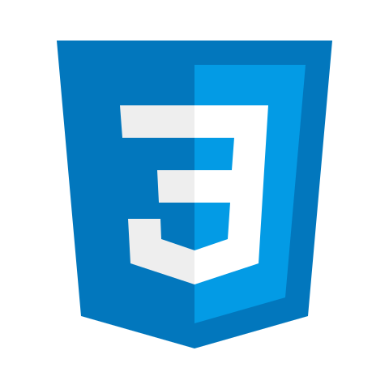
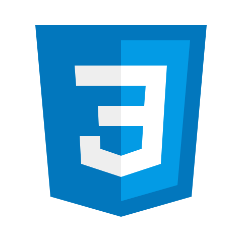

Skills & Technologies
I'm a passionate student exploring the world of web development through hands-on projects and continuous learning. My current skill set includes front-end technologies like HTML, CSS, and JavaScript, along with foundational knowledge in back-end tools such as MySQL. I'm focused on writing clean, responsive code and building user-friendly interfaces, while also learning how server-side logic works. Whether I’m debugging a layout or experimenting with a new framework, I’m always excited to grow and improve.
What I Can Do?
I’m eager to apply my skills to build real-world projects. Whether it’s designing interfaces, writing clean code, or collaborating with a team, I bring enthusiasm and a willingness to learn to every challenge.
 
